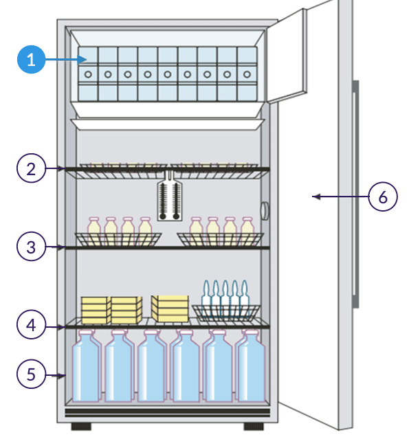

No congelador (evaporador)

Armazene as bobinas de gelo.
A cadeia de frio envolve a tecnologia no seu sentido mais amplo: estrutura, equipamentos, pessoas e processos. Sua preservação é característica fundamental no armazenamento e transporte e consequentemente garantia da qualidade das vacinas, sendo assim, qualquer falha na cadeia de frio pode resultar em perda potencial do produto manuseado.

RDC nº 360, de 27 de março de 2020 - Altera a Resolução de Diretoria Colegiada - RDC n° 304, de 17 de setembro de 2019, que dispõe sobre as Boas Práticas de Distribuição, Armazenagem e de Transporte de Medicamentos.
A utilização de equipamentos apropriados, a elaboração de um programa de manutenção e um planejamento compatível referente à aferição da capacidade da câmara de conservação, de acordo com a necessidade de armazenamento, são condições fundamentais deste processo. Assim, o uso de equipamentos que não atendem aos critérios de qualidade e segurança para o armazenamento desses produtos implicará no aumento significativo de riscos de segurança.
No entanto, a disponibilidade do equipamento apropriado por si só não garantirá a qualidade do seu desempenho. É necessário o atendimento às orientações técnicas previstas no manual do fabricante para promover a garantia do desempenho do equipamento e sua vida útil.
Além disso, a eficaz manutenção e reparo de equipamentos utilizados na cadeia de frio de vacinas é primordial para manutenção da qualidade e para evitar desperdícios causados por excursão de temperatura. Desta forma, deve haver compromisso da gestão no desenvolvimento de Procedimentos Operacionais Padronizados (POPs) e acesso limitado a profissionais treinados.
Enquanto a manutenção periódica dos equipamentos ajuda a garantir que as vacinas sejam mantidas em armazenamento seguro, os POPs descrevem atividades importantes para garantir que qualquer pessoa possa realizar essas atividades de forma correta, padronizada e consistente.
Uma cadeia de frio eficiente depende de um conjunto de ações e procedimentos, como por exemplo:
As condições de armazenamento especificadas pelos laboratórios produtores observam, também, composições e formas farmacêuticas (liofilizadas ou líquidas). Os laboratórios padronizam a apresentação, podendo haver vacinas em frascos com apresentação unidose ou multidoses.
Na apresentação multidose, deve ser observadas as condições de conservação e validade da vacina após abertura do frasco, em conformidade com as orientações contidas na bula do fabricante e nas notas técnicas do PNI. Quando excedido o prazo de validade após abertura, as vacinas devem ser descartadas. O descarte dessas doses corresponde à perda técnica, ou seja, perda do produto após abertura do frasco.
As perdas técnicas são dificilmente evitadas, contudo, potencialmente reduzida por meio de políticas, bem como estratégias e práticas de imunizações otimizadas.

Perdas técnicas: acontecem após a abertura da embalagem primária, abertura do frasco para administração da vacina. Pela característica da perda técnica e atividade desenvolvida nas instâncias locais, as perdas técnicas são, senão exclusivas, essencialmente das salas de imunização e Cries, ocorrem, em grande parte, devido ao curto prazo de validade após abertura do frasco. O controle deste tipo perda, em relação à perda física, é considerado mais complexo, inclusive em função da diversidade da Rede de Frio Nacional, demanda novas políticas, estratégias e práticas melhoradas.
Fonte: Manual de Rede de Frio do Programa Nacional de Imunizações
Vacina covid-19 (recombinante) deve ser conservada sob refrigeração (2 a 8ºC). Não congelar. Armazenar na embalagem externa a fim de proteger da luz. Não agitar.
A vacina covid-19 (recombinante) apresenta-se como 5,0 mL de suspensão injetável em um frasco-ampola de 10 doses (vidro claro tipo I) com tampa (elastomérico com lacre de alumínio). Embalagem com 50 frascos- ampola.
Número de lote e datas de fabricação e validade: vide embalagem. Não use medicamento com o prazo de validade vencido. Guarde-o em sua embalagem original.
A vacina covid-19 (recombinante) é uma suspensão incolor a levemente marrom, clara a levemente opaca. Antes de usar, observe o aspecto do medicamento.
Fonte: Profissionais de saúde - Bula Vacina Covid-19 recombinante vps 002
A vacina adsorvida covid-19 (inativada) deve ser armazenada e transportada sob refrigeração, entre +2ºC e +8ºC, protegida da luz. A vacina não deve ser congelada. Desde que mantida sob refrigeração, entre +2ºC e +8ºC, e protegida da luz, o prazo de validade da vacina adsorvida covid-19 (inativada) é de 12 meses, a partir da data de fabricação.
A vacina adsorvida covid-19 (inativada) não contém conservantes. Deve ser usada imediatamente após abertura.
Esta vacina é uma suspensão injetável, opalescente, com possível formação de precipitado estratificado, que pode ser disperso com agitação. Nenhum aglomerado deve ser encontrado ao agitar. Não deve ser utilizada caso haja alteração na coloração ou presença de partículas estranhas.
Fonte: Dizeres de Texto de Bula - Profissional da Saúde -Vacina adsorvida covid-19 (inativada)
Prazo de validade provisório de 6 meses quando armazenado a pelo menos -60°C e protegido da luz.
Produto estável por até 5 dias entre 2 °C e 8 °C, e por até 2 horas a temperatura de até 30°C, antes de ser diluída e utilizada.
Após diluição, uso imediato.
Fonte: Anvisa
A atenção deve ser redobrada em relação ao armazenamento e conservação das vacinas durante os procedimentos de vacinação extramuros. Confira, no Módulo 3, as recomendações de procedimento de vacinação e transporte para vacinação extramuros.
Fontes: Manual de Rede de Frio e Plano Nacional de Operacionalização da Vacinação contra a Covid-19